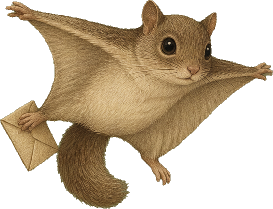
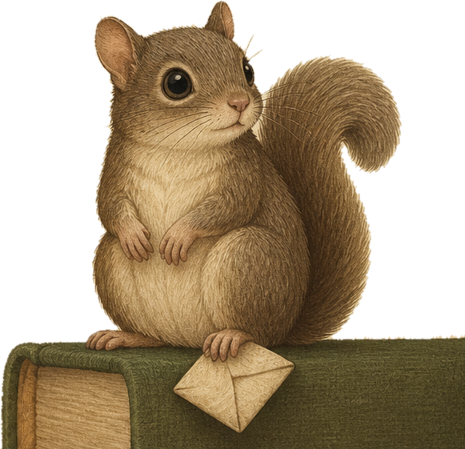

Both counts measure volume, not quality, and neither one ever goes down.
Each card pairs a unit of the work with the next thing to do to it. The color is the unit: source, claim, section, submission. The name is the verb: read, note, write, revise. The dots show how much energy the card assumes.
Or pick the pairing you already know you need.
Search, then cache what you keep. One field is enough. Nothing leaves this phone, and no account connects unless you tap it open yourself.
Set once. The search words go on the end. Leave empty to use NC State University Libraries.
The kit asks three questions before anything else. Then it writes the instructions for whatever AI you already use, so the AI works as a thinking partner. It asks questions, proposes structure, and never drafts your prose. Or switch the AI off and review the section yourself.
Answer the three questions first.
Five questions, answered once. Each answer becomes a rule the editorial pass carries. Rules are plain sentences, and you edit them here.
Scripts for the people the work answers to, with a log of who was told what, so nobody has to remember whether it was sent. Fill the blanks you know.
On a hard day, any one of these counts as a full session.
This is the Archivist resting in her pocket. It is a rule, and it is not a failure.
Add this page to your home screen. Open it when you sit down, draw one card, press Start, and stop when the timer stops. Cache sources as you meet them. Before a revision, run the editorial pass on one section. When a deadline moves, use the outside world tab the same day. Everything works on paper too: write the card on an index card, keep the cache in a notebook, and log the session here with one tap.
If you share a house, an office, or a manuscript with someone using this kit: ask which card they are on, never how the project is going. Twenty five minutes with you in the room counts. Do not count pages, and do not mention a deadline they have already named. If they say they are done for the day, they are.
Each rule comes from one of these sources or is marked as the studio's own practice. The DOIs were verified against Crossref in October 2026. The summaries are the studio's.
"When X, I will Y" plans raised goal attainment across 94 studies. Each card is one, with sitting down as X.
Why each card holds one unit and one verb, three steps at most, and why the cache holds the sources so the head does not have to.
Writers move among the three processes, and holding all of them at once is the hard part. The verbs on the cards separate them.
Task aversiveness, delay, and low self-efficacy predicted procrastination more than anxiety or perfectionism. The cards shrink the task, and the Too big button shrinks it again.
Adults with ADHD reproduced intervals less accurately, and worse at longer durations. The timer puts the session outside the head.
Self-compassion after failure raised motivation to improve relative to self-criticism. The Fairness Clause and the counts that never fall are written for this.
The twenty five minute session, the cache, and the editorial pass format (passage, issue, rule, at most one wording) are the studio's own practice, tested by its maker on her own articles, and not a study.

She tucks away every good source she finds, a quote here, a page number there. When the draft needs one, she glides straight back to it. No digging through forty open tabs.